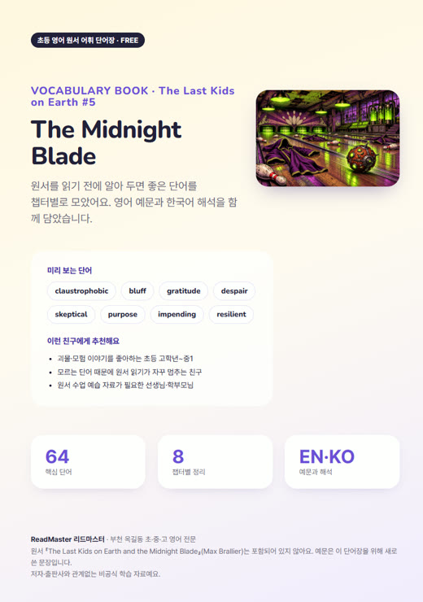
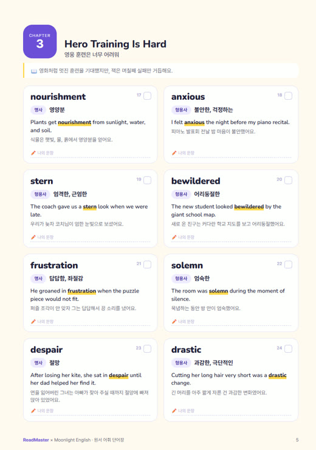
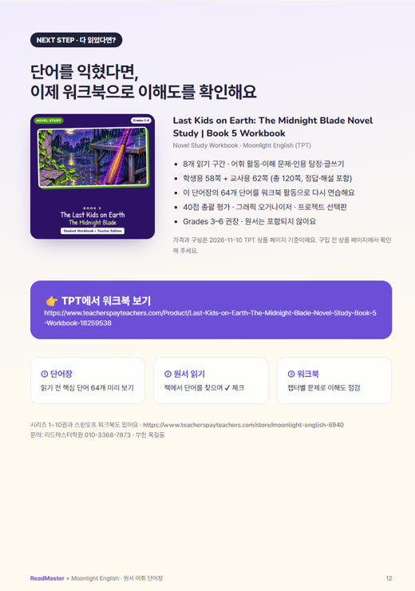
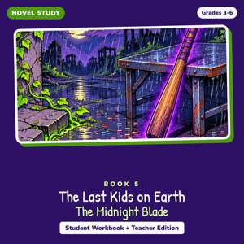

The Last Kids on Earth and the Midnight Blade
어휘 단어장
원서를 읽기 전에 알면 좋은 단어 64개를 챕터별로 모았어요. 단어마다 영어 예문과 한국어 해석, 복습 퀴즈까지 넣은 12쪽 PDF예요.
📘 무료 단어장 PDF 받기 📝 다 읽은 뒤엔 워크북으로 (TPT)


이렇게 쓰면 좋아요
- 읽기 전: 챕터 단어를 소리 내어 읽고 뜻 맞히기
- 읽는 중: 책에서 만난 단어에 ✔ 체크
- 읽은 뒤: 복습 퀴즈와 나만의 문장 만들기

Last Kids on Earth: The Midnight Blade Novel Study | Book 5 Workbook
8개 읽기 구간 · 어휘 활동·이해 문제·인용 탐정·글쓰기 · 학생용 58쪽 + 교사용 62쪽 (총 120쪽, 정답·해설 포함) · 이 단어장의 64개 단어를 워크북 활동으로 다시 연습해요 · 40점 총괄 평가 · 그래픽 오거나이저 · 프로젝트 선택판 · Grades 3–6 권장 · 원서는 포함되지 않아요
2026-11-10 TPT 상품 페이지 기준
8개 읽기 구간 · 어휘 활동·이해 문제·인용 탐정·글쓰기 · 학생용 58쪽 + 교사용 62쪽 (총 120쪽, 정답·해설 포함) · 이 단어장의 64개 단어를 워크북 활동으로 다시 연습해요 · 40점 총괄 평가 · 그래픽 오거나이저 · 프로젝트 선택판 · Grades 3–6 권장 · 원서는 포함되지 않아요
2026-11-10 TPT 상품 페이지 기준
단어장의 장면 설명과 예문은 리드마스터가 학습용으로 새로 쓴 문장이에요. 책 본문은 담겨 있지 않고 저자·출판사와 관계없는 비공식 자료예요. 원서는, 원서는 정식으로 구입하거나 도서관에서 빌려 읽어 주세요.